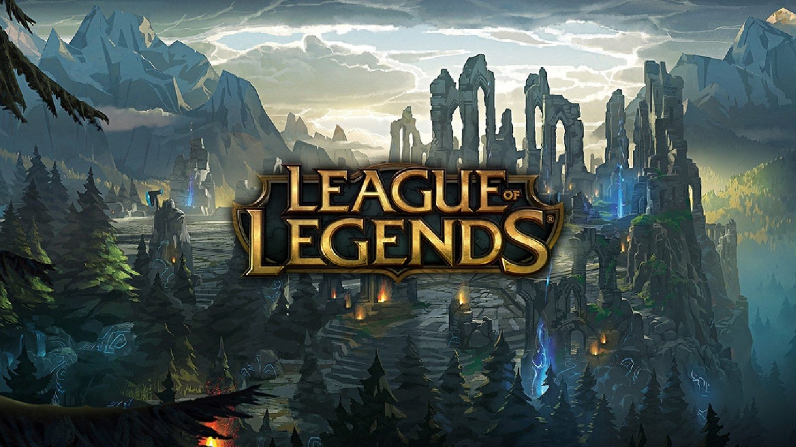

BEST OF THE BEST 2010s
I'm a There are dozens of ways you could put together a list of the best video games ever made, but we have categorized them into Role-Playing Games, Shooter games, sport games and Strategy games and see the best of the best games throughout the decades from 2010 to 2020. The past 10 years of gaming have been a wild ride. The evolution on gaming was a huge impact in the past decade. There are so many great video games like Mass effect, Call of duty series, Super Mario Bros, Assassin's creedthat has evolved and developed in the past 10 years, it's impossible to narrow it down the list.
ROLE-PLAYING GAMES
A role-playing video game (commonly referred to as simply a role-playing game or an RPG as well as a computer role-playing game or a CRPG) is a where the player controls the actions of a character (and/or several party members) immersed in some well-defined world. The Past decade (2010-2020) RPG has impacted the gaming world in a tremendous way and some of the best games throughout the decade like Mass Effect 2, Fallout, Bloodbourne and the most famous is Dark souls, Not only are you free to create your character exactly as you see fit with a classless system, you are free to go just about anywhere you can see in whatever order you choose but from its challenging and difficult quests and fighting of enemies it is the reason why it makes it one of the top best games.
SHOOTER

Shooter games are a sub genre of action video game, which often test the player's spatial awareness, reflexes, and speed in both isolated single player or networked multiplayer environments. Usually weapons is a firearm or some other long-range weapon, and can be used in combination with other tools such as grenades for indirect offense, armor for additional defense. Most commonly, the purpose of a shooter game is to shoot opponents and proceed through missions without the player character being killed or dying as a result of the player's actions. A shooting game is a genre of video game where the focus is almost entirely on the defeat of the character's enemies using the weapons given to the player. One of the most famous Action games are Call of duty series. Throughout the decade treyarch (the developers) released in a total of 24 Call of duty series. What makes gamers love this game is because of its story line, the multiplayer community, their creativeness and all the fun overall.
SPORTS
A sports game is a video game genre that simulates the practice of sports. Most sports have been recreated with a game, including team sports, track and field, extreme sports and combat sports. Some games emphasize actually playing the sport (such as the Madden NFL series), whilst others emphasize strategy and sport management (such as Championship Manager and Out of the Park Baseball). Some, such as Need for Speed, Arch Rivals and Punch-Out!!, satirize the sport for comic effect. This genre has been popular throughout the history of video games and is competitive, just like real-world sports. A number of game series feature the names and characteristics of real teams and players, and are updated annually to reflect real-world changes. Sports genre is one of the oldest genres in gaming history.
STRATEGY

Strategy video games are categorized based on whether they offer the continuous gameplay of real-time strategy (RTS), or the discrete phases of turn-based strategy (TBS). Often the computer is expected to emulate a strategically thinking "side" similar to that of a human player (such as directing armies and constructing buildings), or emulate the "instinctive" actions of individual units that would be too tedious for a player to administer (such as for a peasant to run away when attacked, as opposed to standing still until otherwise ordered by the player hence there is an emphasis on artificial intelligence. League of Legends is a multiplayer online battle arena. The game consists of two current running game modes: Summoner's Rift and Howling Abyss. In each game mode, teams work together to achieve a victory condition, typically destroying the core building (called the Nexus) in the enemy team's base after bypassing a line of defensive structures called turrets, or towers.
▲